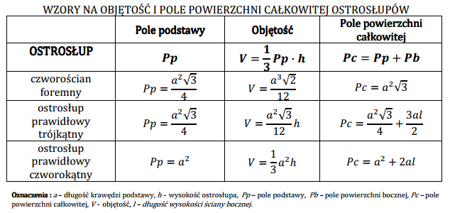
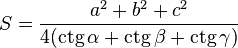

|
|
 Często do obliczeń potrzebna jest znajomość trygonometrii. Dlatego też przydatne są następujące wzory: Twierdzenie cosinusów, inaczej twierdzenie Carnota Twierdzenie tangensów, inaczej twierdzenie Regiomontana Wzory na pole trójkąta często wykorzystują funkcje trygonometryczne lub  gdzie:
|

© Konrad Szlagor, Technikum im.Mikołaja Kopernika w Kętach.